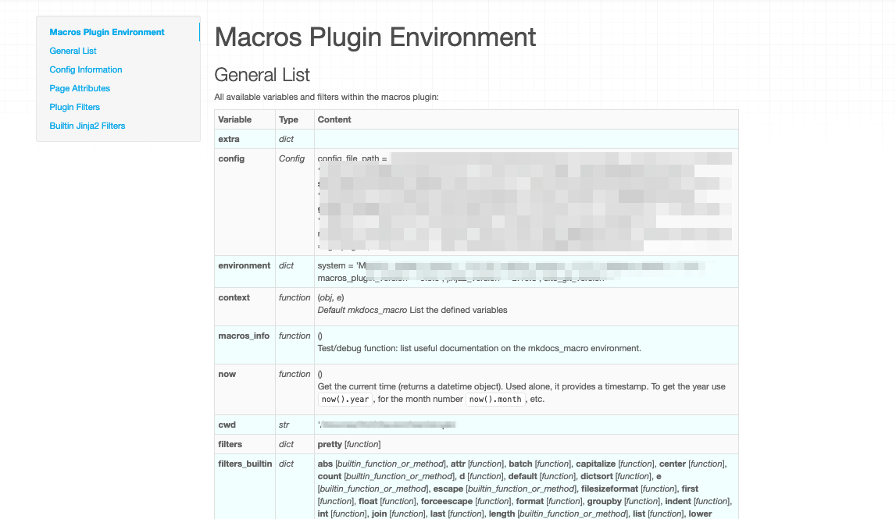

mkdocs-macros
一个插件，通过使用变量和宏来释放Mkdocs的强大功能。
概述
定义
mkdocs-macros-plugin is a plugin/framework that makes it easy for contributors of an MkDocs website to produce richer and more beautiful pages. It can do two things:
- Transforming the markdown pages
into Jinja2 templates
that:
- Use environment or custom variables,
- Call pre-defined or custom macros,
- Exploit standard or custom filters
- Replacing MkDocs plugins for a wide range of tasks: e.g. manipulating the navigation, adding files after the html pages have already been generated etc.
The capabilities of mkdocs-macros-plugin are such that it can be called a "mini-framework".
mkdocs-macros-plugin is very easy to use out of the box, even for small documentation projects: it provides data about the platform, the git repository (if any), etc.
变量
Regular variables are loaded with each markdown page which is being rendered.
Variables can be defined in five different ways:
- Global, i.e. for the whole documentation project:
- (for designers of the website): in the
mkdocs.ymlfile, under theextraheading - (for contributors): in external yaml definition files
- (for programmers): in a module (Python), by adding them to a dictionary
- (for designers of the website): in the
- Local, i.e. in each Markdown page (for contributors):
- in the YAML header
- in the text, with a
{%set variable = value %}statement
用模板丰富降价
You can leverage the power of Python in markdown thanks to jinja2 by writing this :
The unit price of product A is {{ unit_price }} EUR.
Taking the standard discount into account,
the sale price of 50 units is {{ price(unit_price, 50) }} EUR.
If you defined a price() function, this could translate into:
The unit price of product A is 10.00 EUR.
Taking the standard discount into account,
the sale price of 50 units is 450.00 EUR.
It is possible to use the wide range of facilities provided by Jinja2 templates.
创建自己的宏和过滤器
Instead of creating countless new plugins, programmers can define their macros and filters.
Getting Started with Macros
Need a function to display some repetitive markdown, or environment information?
If you are a Python programmer, go ahead and create your own macros and filters in Python!
It's actually much, much easier than writing a VBA function for Excel...
Create a main.py file in the top directory of your mkdocs
project and add this call:
import ...
def define_env(env):
"Hook function"
@env.macro
def mymacro(...)
...
return some_string
You can insert a call in any markdown page of your project:
{{ mymacro(...) }}
Restart your mkdocs server.
Et voilà !
Producing HTML
The result of a macro can also be HTML code: this makes macros especially useful to make custom extensions to the syntax of markdown, such as buttons, calls to email, embedding YouTube videos, etc.
促进大型或复杂的文档项目
mkdocs-macros was also developed with large or complex projects in mind.
You can include separate configurations files, import Jinja2 macro definitions, add "post-production" elements to your website, etc.
You can go all the way as to pre-package modules into pluglets that can be installed as Python packages.
Note
By using mkdocs-macros, you can cut down the number of plugins required for your documentation project.
In a wide range of cases, writing your own module with macros (Python functions for a single website), could save the effort of developing new plugins for mkdocs.
安装
先决条件
- Python version > 3.5
- MkDocs version >= 1.0 (it should work > 0.17 (it should be compatible with post 1.0 versions)
标准安装
pip install mkdocs-macros-plugin
If you wish to also run the tests or rebuild the project's documentation:
pip install 'mkdocs-macros-plugin[test]'
"手动安装"
To install the package, download the code from its github page and run:
python setup.py install
宏插件的声明
在文件 mkdocs.yml 中声明插件:
plugins:
- search
- macros
Warning
如果你在你的配置文件中创建plugins条目，你还应该为search插件插入一行。
在没有plugins条目的情况下，MkDocs默认启用search。
但是当它出现时，如果你想使用它，那么你必须显式地声明它。
检查它是否工作正常
Tip
The recommended way to check that the plugin works properly is to add the
following command in one of the pages of your site (let's say info.md):
{{ macros_info() }}
In the terminal, restart the environment:
> mkdocs serve
You will notice that additional information now appears in the terminal:
INFO - Building documentation...
[macros] Macros arguments: {'module_name': 'main', 'include_yaml': [], 'j2_block_start_string': '', 'j2_block_end_string': '', 'j2_variable_start_string': '', 'j2_variable_end_string': ''}
Within the browser (e.g. http://127.0.0.1:8000/info), you should see a description of the plugins environment:

如果你看到了这个信息，你应该都设置好了。
好好看看这个通用列表，因为它让你大致了解了你可以用宏插件做什么。
其他部分提供了更详细的信息。
插件配置
下面是MkDocs配置文件plugin部分中所有可能的参数:
| Argument | Default | Description |
|---|---|---|
module_name |
main |
Python模块名称包含宏、过滤器和变量。表示文件或目录，没有扩展名;您可以指定一个路径(例如:include/module)。如果没有main模块可用，它将被忽略。 |
modules |
[] |
预安装的Python模块列表, i.e. listed by pip list. |
include_dir |
用于包含外部文件的目录 | |
include_yaml |
[] |
要包含的yaml文件或key: filename对的列表 |
j2_block_start_string |
非标准的Jinja2开始块标记 | |
j2_block_end_string |
非标准的Jinja2块结束标记 | |
j2_variable_start_string |
变量开始的非标准Jinja2标记 | |
j2_variable_end_string |
变量结束的非标准Jinja2标记 |
例如:
plugins:
- search
- macros:
module_name: mymodule
include_dir: include
-
参考现有的wiki引擎，如Dokuwiki或Atlassian Confluence. ↩